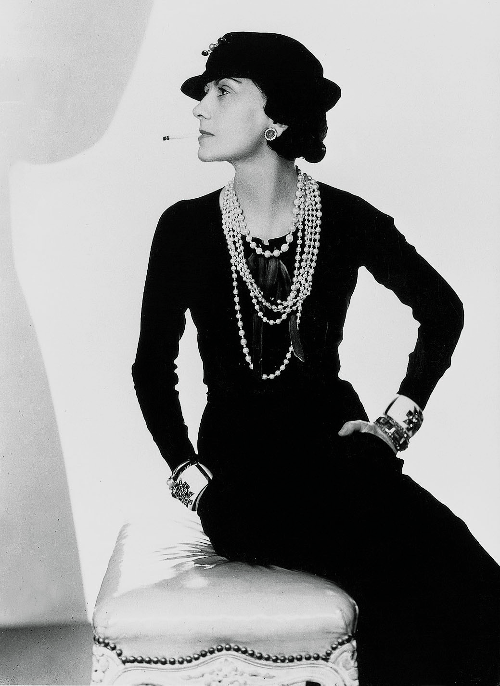

Coco Chanel

Famed fashion designer Coco Chanel was born Gabrielle Bonheur Chanel on August 19, 1883, in Saumur, France. With her trademark suits and little black dresses, Coco Chanel created timeless designs that are still popular today. She herself became a much revered style icon known for her simple yet sophisticated outfits paired with great accessories, such as several strands of pearls.
As Chanel once said,
“Luxury must be comfortable, otherwise it is not luxury.”
Her early years, however, were anything but glamorous. After her mother’s death, Chanel was put in an orphanage by her father who worked as a peddler. She was raised by nuns who taught her how to sew—a skill that would lead to her life’s work. Her nickname came from another occupation entirely. During her brief career as a singer, Chanel performed in clubs in Vichy and Moulins where she was called “Coco.” Some say that the name comes from one of the songs she used to sing, and Chanel herself said that it was a “shortened version of cocotte, the French word for ‘kept woman,” according to an article in The Atlantic.
Fashion Pioneer
Around the age of 20, Chanel became involved with Etienne Balsan who offered to help her start a millinery business in Paris. She soon left him for one of his even wealthier friends, Arthur “Boy” Capel. Both men were instrumental in Chanel’s first fashion venture.
Opening her first shop on Paris’s Rue Cambon in 1910, Chanel started out selling hats. She later added stores in Deauville and Biarritz and began making clothes. Her first taste of clothing success came from a dress she fashioned out of an old jersey on a chilly day. In response to the many people who asked about where she got the dress, she offered to make one for them. “My fortune is built on that old jersey that I’d put on because it was cold in Deauville,” she once told author Paul Morand.
In the 1920s, Chanel took her thriving business to new heights. She launched her first perfume, Chanel No. 5, which was the first to feature a designer’s name. Perfume “is the unseen, unforgettable, ultimate accessory of fashion. . . . that heralds your arrival and prolongs your departure,” Chanel once explained.
In 1925, she introduced the now legendary Chanel suit with collarless jacket and well-fitted skirt. Her designs were revolutionary for the time—borrowing elements of men’s wear and emphasizing comfort over the constraints of then-popular fashions. She helped women say good-bye to the days of corsets and other confining garments.
Another 1920s revolutionary design was Chanel’s little black dress. She took a color once associated with mourning and showed just how chic it could be for eveningwear. In addition to fashion, Chanel was a popular figure in the Paris literary and artistic worlds. She designed costumes for the Ballets Russes and for Jean Cocteau’s play Orphée, and counted Cocteau and artist Pablo Picasso among her friends. For a time, Chanel had a relationship with composer Igor Stravinsky.
Lovelife and Scandal
Another important romance for Chanel began in the 1920s. She met the wealthy duke of Westminster aboard his yacht around 1923, and the two started a decades-long relationship. In response to his marriage proposal, she reportedly said “There have been several Duchesses of Westminster—but there is only one Chanel!”
The international economic depression of the 1930s had a negative impact on her company, but it was the outbreak of World War II that led Chanel to close her business. She fired her workers and shut down her shops. During the German occupation of France, Chanel got involved with a German military officer, Hans Gunther von Dincklage. She got special permission to stay in her apartment at the Hotel Ritz. After the war ended, Chanel was interrogated by her relationship with von Dincklage, but she was not charged as a collaborator. Some have wondered whether friend Winston Churchill worked behind the scenes on Chanel’s behalf.
While not officially charged, Chanel suffered in the court of public opinion. Some still viewed her relationship with a Nazi officer as a betrayal of her country. Chanel left Paris, spending some years in Switzerland in a sort of exile. She also lived at her country house in Roquebrune for a time.
At the age of 70, Chanel made a triumphant return to the fashion world. She first received scathing reviews from critics, but her feminine and easy-fitting designs soon won over shoppers around the world.
Legacy
Another important romance for Chanel began in the 1920s. She met the wealthy duke of Westminster aboard his yacht around 1923, and the two started a decades-long relationship. In response to his marriage proposal, she reportedly said “There have been several Duchesses of Westminster—but there is only one Chanel!”
The international economic depression of the 1930s had a negative impact on her company, but it was the outbreak of World War II that led Chanel to close her business. She fired her workers and shut down her shops. During the German occupation of France, Chanel got involved with a German military officer, Hans Gunther von Dincklage. She got special permission to stay in her apartment at the Hotel Ritz. After the war ended, Chanel was interrogated by her relationship with von Dincklage, but she was not charged as a collaborator. Some have wondered whether friend Winston Churchill worked behind the scenes on Chanel’s behalf.
While not officially charged, Chanel suffered in the court of public opinion. Some still viewed her relationship with a Nazi officer as a betrayal of her country. Chanel left Paris, spending some years in Switzerland in a sort of exile. She also lived at her country house in Roquebrune for a time.
At the age of 70, Chanel made a triumphant return to the fashion world. She first received scathing reviews from critics, but her feminine and easy-fitting designs soon won over shoppers around the world.